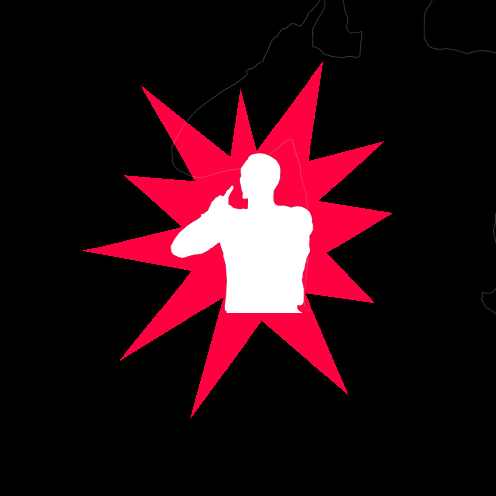

NBA player's story why you shouldn't give up on your goal of life.
NBA players who keep working on their goal. So this is why you should keep keep working on your goal. Now let's hop in to their story.
First player that we are going to talk about is Damian Lilliard. When Dame was in high school he meat some bad guys with guns pointing on his head in the street.
